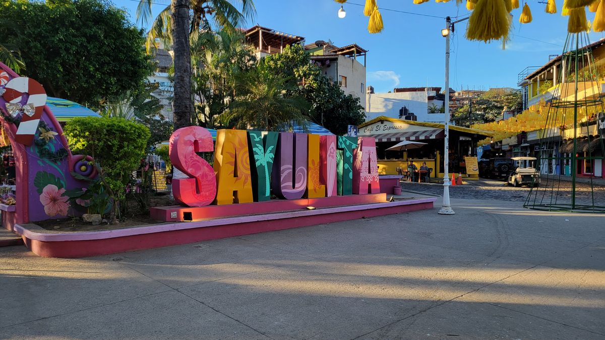
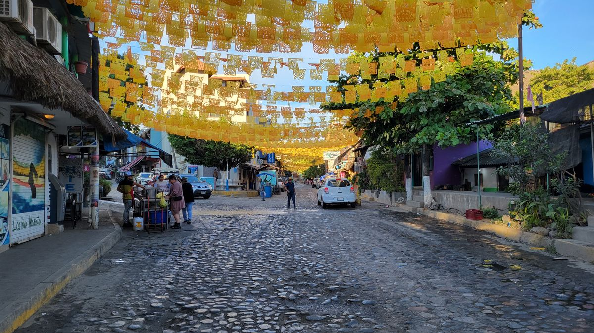
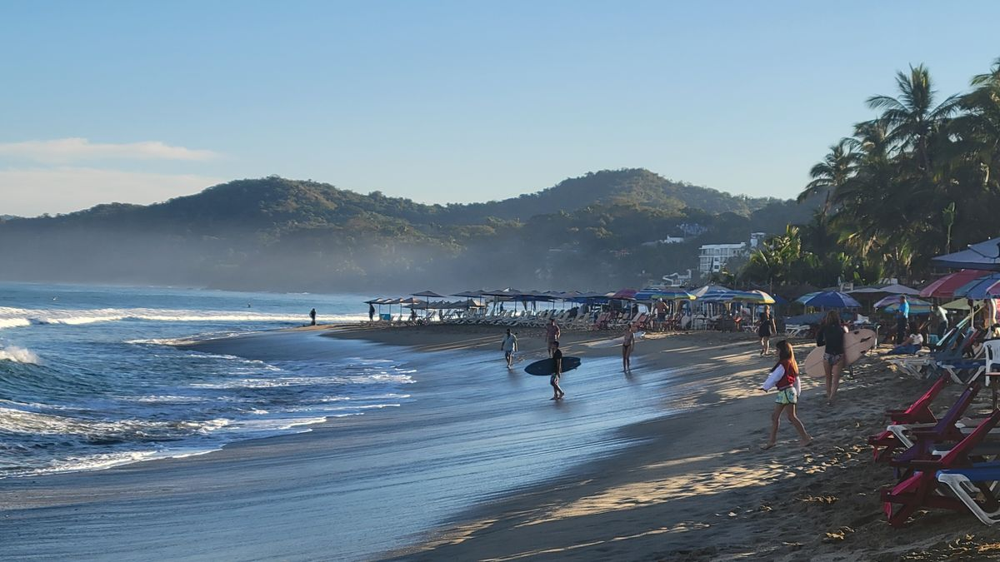
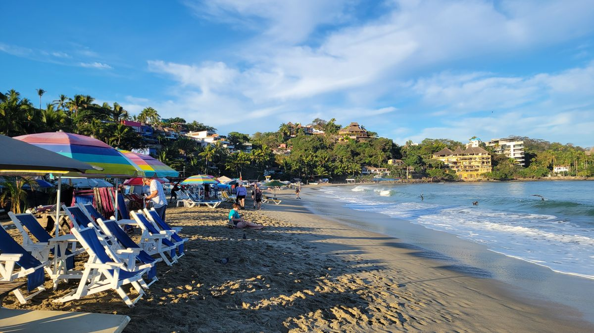
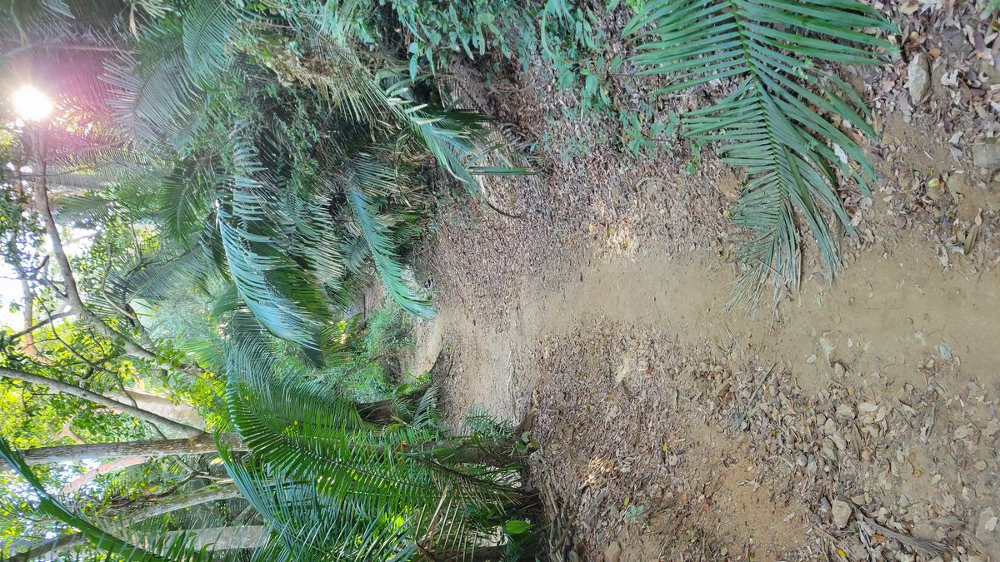
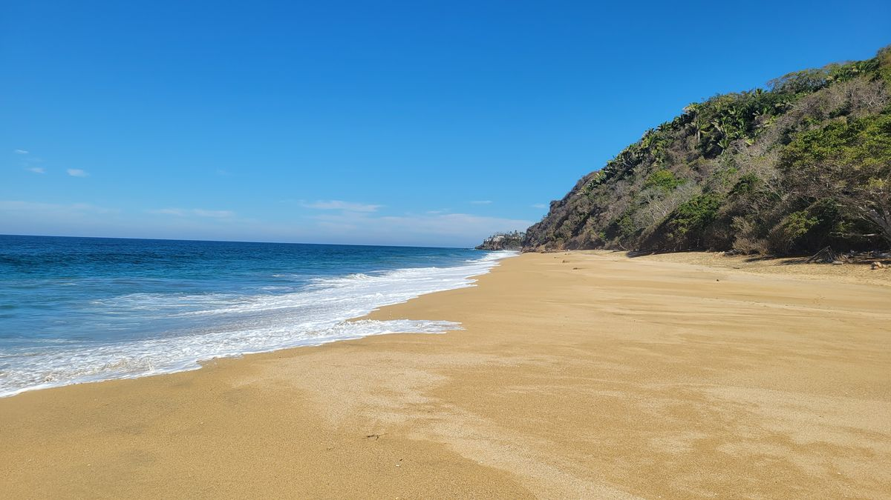

Sayulita
Even though intercity buses are one of the more popular modes of travel in México, there isn’t one national bus company like in the United States. Multiple lines run mostly regional routes which means piecing together a routing can be a challenge. I mostly use the website Rome2rio.com to figure out what companies go where but even then; I figure the IT department at most of these businesses are not the highest priority and have found schedules to be completely wrong and websites broken or non-existent. Buying a ticket at the station is really your most reliable option for getting around México.
I had found what I thought would be a competent itinerary from Mazatlán to the social media famous pueblo of Sayulita, only to find after I arrived the bus line I had chosen did not stop at the Central Station, instead having its own terminal in a different part of town. Thankfully there was a company that could take me to Tepic, where I would connect to another line to Bucerias and then another local bus to Sayulita.
The ride to Tepic was unproblematic. The scenery changes greatly on this side of the Sea of Cortez. Gone are the Saguaros and desert landscapes, replaced with more lush tropical trees and plants. The first Blue Agave farms appear, the plant used to create México’s famous Tequila. After arriving at the Tepic Station, I found the desk for my connecting bus and purchased a ticket.
Rome2rio had said it would only be a 1-hour bus ride to Bucerias which I did not double check on Google Maps. Had I done that I would have realize there was no way a bus was going to cover 140km in an hour. My Spanish has done me well so far in this journey but I think I misunderstood the agent when she asked which bus I wanted. I just asked for the next one, but I think she was trying to say there were multiple routes, a direct service and a local service. 4 hours into my 1 hour ride and I was getting a little antsy because the last bus from Bucerias to Sayulita left at 7:30pm, according the not so reliable Rome2rio and we were approaching that time quickly.
To my relief, the bus made a turn off the main highway and started making stops at the small coastal pueblos of the Nayarit state. I saw on Google Maps that we were approaching Sayulita and when the driver announced the stop, I grabbed my things and just got off there. Whatever works I suppose.
I discovered that Sayulita is not a new entrant to the Mexican vacation game. Its been a popular destination for decades, mostly for surfers who visit for its ideal surf conditions and even more so for beginners learning how to ride the waves. It has risen in prominence more so in recent years due to TikTok and GenZ influencers promoting the city which is how I found out about it.
After hiking down a dark road from the highway to my Hostel, checking in and getting situated I ventured out to find some food. I found Sayulita main plaza to be crowded with cars, rented Golf Carts and ATV’s and people of all ages. It was obvious though the demographic did trend younger. A group from my Hostel invited me to venture out with them to a local club which I now regrettably went. Nothing bad happened just imbibed on more Cervezas than intended and paid for it the next day. It was a good day for laundry and to get caught up on writing anyways.
The next morning I was feeling a little more like myself and after receiving some advice for better beaches in the area from my friendly Canadian roommates I ventured out early to explore Sayulita a little more thoroughly. Its readily apparent the massive influx of tourists has taken its tool on the little Pueblo of Sayulita (another Pueblo Magico to check off the list). Hundreds of restaurants and bars and shops line its tiny streets waiting to part the tourist from their money.


Beach chairs for rent by the day are packed tightly on the beach, arrive early for the best location. Arrive earlier to watch as the Surfers take advantage of the mornings rising tide to get a few rounds in before the beach becomes crowded with vacationers.


As nice as the beach in Sayulita is, crowds are not my scene. Not when I have an option anyways and I started a hike outside the town towards the surrounding jungles. Another attraction of Sayulita is its many trails cut through the surrounding jungles. Some more so than others. The path I was following this morning was well established, obviously used by many people before in search of more solitude than the Playas de Sayulita could provide.
A short 2ish KM later I emerged from the jungle to find the deserted Playa Malpaso. And set up my things for the day. Only the occasional passerby made an appearance and anyone deciding to set up camp on this beach could do so with hundreds of yards to spare. Only after running out of sunscreen and water did I decide to leave early in the afternoon returning on a slightly different route which allowed me to see the other side of Sayulita.


The North side of Sayulita or as locals will call, the other side of the bridge, is a much more tranquil and relaxing place compared to the exciting center. Airbnb’s and boutique hotels line the hills giving sea views to those willing to pay the price. Neighborhood bars and restaurants are set up beneath family homes and along sidewalks to sell Daiquiris, Tacos and Tortas to tourists. I didn’t stop though as the Hostel was showing streams the NFL conference championships that afternoon.
My time was short in Sayulita as I’m already behind my intended schedule for this adventure. I really did like the overall vibe of the city, the mix between the calm and the chaotic, separated by the bridge and the Rio Sayulita. I can’t help but wonder what this town would have been like 5-10 years ago. Maybe, like so many social media trends, the hype of this beach town will fade and I can visit Sayulita another, more peaceful time.